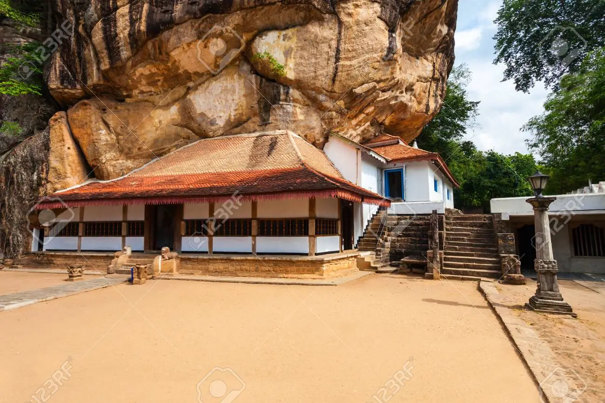
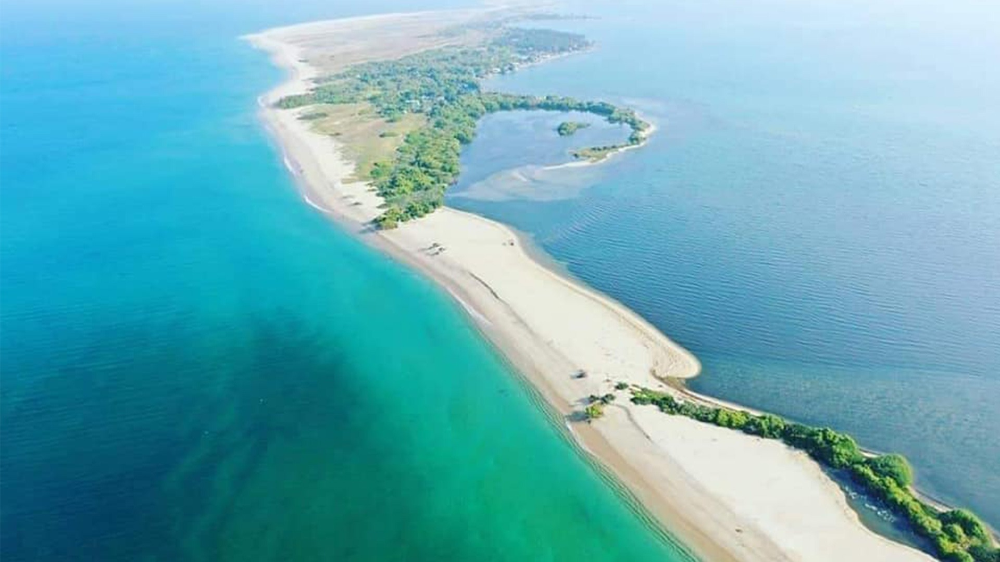
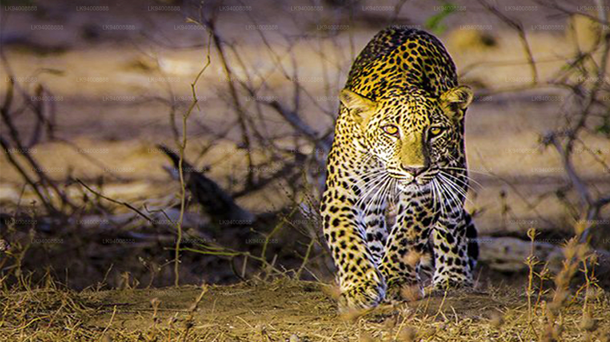
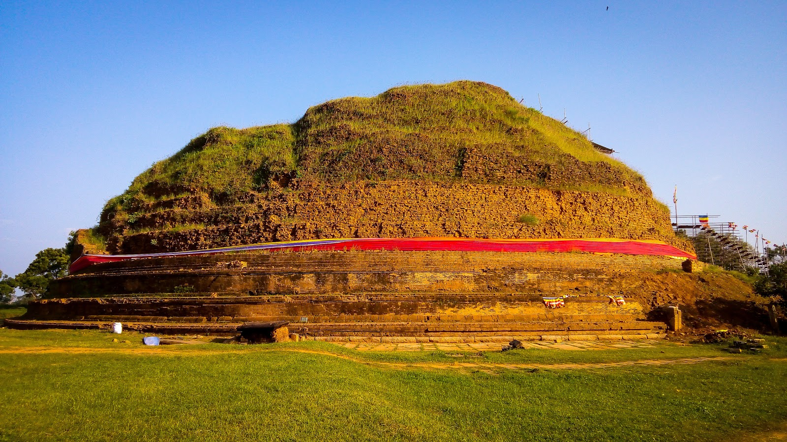

The Best Places to Travel in North Western Province...
|  |
Ridi Viharaya (Sinhala: රිදී විහාරය) or Silver Temple is a 2nd BCE temple of the Theravada Buddhist in the valley. Ridigama, Sri Lanka. Built during the reign of Dutthagamani of Anuradhapura, the temple is considered the place where the silver metal, which gave the silver to finish Ruwanwelisaya; one of the largest settlements in Sri Lanka Lanka, was discovered. According to the history of Mahavamsa and Thupavamsa, the Ridi Viharaya complex was built thank you for helping him realize his dream of ending Ruwanwelisaya.
|  |
Baththalangunduwa Island: a small island off the coast of Kalpitiya in Putalam North West Province of Sri Lanka Province. There are 14 islands. Baththalangunduwa is the second largest island after Uchchimune and Mohontuwara. Baththalangunduwa Island covers an area of 145.53 hectares. The sculptors is 30.3 km from the mainland.
|  |
Wilpattu National Park (Willu-pattu, "Land of Lakes") is a national park Sri Lanka. A unique feature of this park is the presence of "Willus" (natural lakes) - natural, sandy loam. water basins or cisterns filled with rainwater. It is located on the northwest coast of the arid lowland zone of Sri Lanka Lanka, park 30 km (19 mi) west of Anuradhapura and 26 km (16 mi) north of Putalam (approximately 180 km) km (110 mi) north of Colombo). The park is 1,317 km2 (508 sq mi) (131,693 hectares) in area and 0–152 m (0–499 ft) above sea level. About one hundred and six lakes (Willu) and tanks are found scattered throughout Wilpattu. Wilpattu is the largest park and is one of the oldest national parks in Sri Lanka. Wilpattu world famous for its leopard (Panthera pardus kotiya). Remote camera survey conducted by Wilpattu from July to October 2015 by Wilderness and Wildlife Conservation Trust photographed forty-nine leopards in the area surveyed, the total area density between that of Yala. National Park's Block I and Horton Plains National Park. From December 1988 to March 16, 2003, the park was closed due to security concerns around Sri Lankan. Civil War, before it was reopened to tourists sixteen years later. Visitor access is now restricted about 25% of the park, the rest is a dense forest or scrub. Popular visiting times the period between the months of February and October, although there are many private ecotourism groups running safaris all year round.
|  |
Deeghawapi (Pali, "water storage place") is a sacred Buddhist and archaeological temple. a place in the Ampara Region of Sri Lanka, boasting historical records dating from the 3rd century BCE. Reservoirs, called "tanks", were an important feature of ancient Sri Lankan hydraulic civilization, and temples and cities were built around them. The significance of Dighavapi is linked to legends about a visit to this site by the Buddha himself, and many references to Deeghawapi in ancient writings and as in the Pali literature. It also contributed to the political history of the region. The latest (Medieval) times, Sinhalese kings settled the Moors and Dutch in neighboring areas. Construction is expected to be completed by the end of 2023.